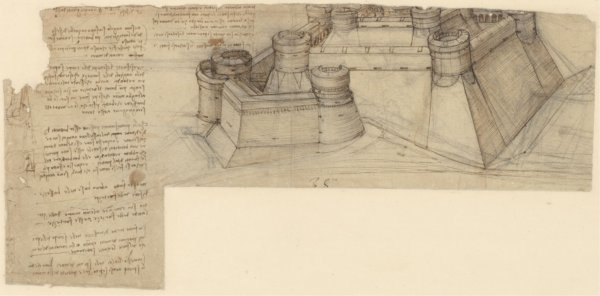
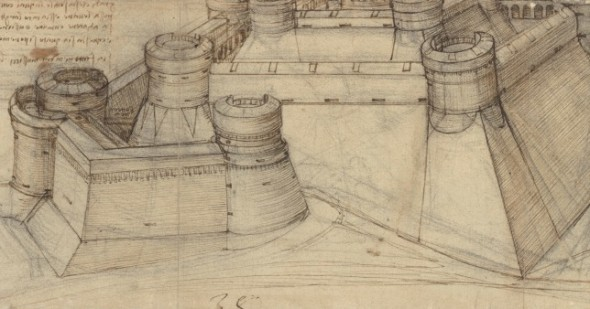

Documentation
The design of the great fortress can be traced back to around 1507. In the note, below, Leonardo describes widely innovations that will be taken, with particular reference to the increased ratio between measure in plan and measure in elevation with the introduction of thick curtain walls can absorb the shots of firearms. The version of the mountain fortress has been redesigned by Leonardo to better withstand the increased offensive force of new firearms, developed from the second half of '400.


The double perimeter of concentric walls stands in defense of the mighty central tower, perhaps dwelling of Lord. Another important innovation is the total absence of battlements. The crest of the entire wall structure is, in fact, constituted by a low parapet, with receding profile to deflect the enemy fire. Here are made the crevices for the defense batteries. The ravelin, is constituted by a further curtain wall positioned to defend the entry at the base of the castle.

Source: Scribd